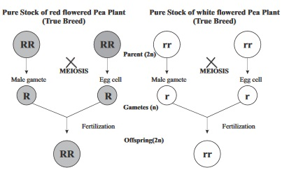
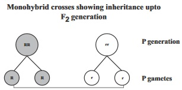
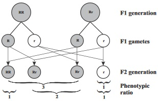
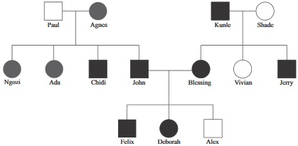

New Senior School Biology Practical Activity & Work Book 3
Chapter
8
GENETICS
Notable Concepts
Mendelian Genetics.
Cellular basis for heredity.
Transmission of characters.
Ammendment of mendelian genetics.
Application of genetics.
Background Information
The law of Segregation of genes and (ii) The law of independent assortment of genes (Mendel did not use the word genes rather he used the wordfactors).
Law of Segregation of genes: The law can be summarized below
*Heritable characters of an organism are determined by factors (genes) which are discrete (No mixing or blending) unit of inheritance .
*Agene for a character may have alternative formscalledalleleswhichshowsthecharacter in different ways.
*In an organism with diploid number of chromosomes, each character is controlled by two copies of each gene. This may be identical alleles (homozygous) or different alleles (heterozygous).
Also if a diploid organism has two different alleles (heterozygous) for a character, one allelecanbedominant,dictatingtheexpression of the character while the other (the recessive allele) has it’s character not in appearance.
*In a diploid organism that is heterozygous, the two alleles during meiosis separate (segregate) from each other going randomly to a different gamete.
Law of independent Assortment
The first law was as a result of monohybrid crossing (crossing involving only one pair of alleles)mendels law of independent assortment which states that: the inheritance of alleles for one characteristic does not affect the inheritance for alleles for other characteristic. This means that, whether a plant is short or tall, for instance , has no effect on whether its seed are smooth or wrinkled, but all the characters separate independently.
Cellular Basis for Heredity
One major reason why mendel was neglected for so long was because scientists at that time, had no understanding of cellular basis for heredity. For now the study of the cellular process in sexual reproduction has linked mendels conclusion to the structure of the cell.
The cell structure has nucleus which contains chromosomes. It is also common scientific knowledge of the present day that there ia a body cell and there is a sex cell. Abody cell (somatic cell) has a diploid number of chromosomes 2n. In humans it is 46. Asex cell (gamete) has a haploid number of chromosomes n.In humans it is 23 in number. The matching pairs of chromosomes in a diploid cell are said to be homologous.
The chromosome theory tells us that different genes lay on different chromosomes. It is this chromosome theory that gives cellular basis for heredity (and even mendels laws). According to the chromosome theory, chromosomes contain genes which occur in pairs. Only characters controlled by genes can be transmitted. The sum of the genes an offspring inherits from parents is known as its genotype or genetic make up. This determines or constitutes the inherited character of an individual, The actual physical expression of the characters is the organisms phenotype.
TRANSMISSION AND EXPRESSION OF CHARACTER FROM PARENTS TO OFFSPRING
Agene for a particular character (for instance colour) may have alternative form that will express the character in different ways (say red and white) each alternative form of a gene (red or white for example) is called allele. Such pair of genes is called alleles or an allelic pair. During sexual reproduction, thousands of genes are passed by parents to their offsprings. Though one cannot easilly observe how several thousands of characters are transmitted from generation to generation one can easily monitor the inheritance pattern of a single pair of genes. This is called single factor inheritance. Singlefactorinheritance can be studied by a plant that breads true in two contrasting characters e.g Red and white flowered pea plants. The ones that give rise to red flowered pea plants consistently by crossing them among themselves has two genes for red RR which are homozygous. The same thing is application to the white flowered pea plant, on true breed. They give rise to rr for that character. This can be explained by the fact that all the gametes that are a product of the true breed were homozygous for their different flower colours. An individual is said to be homozygous for a character that has more than one form, if the two copies of the gene controlling that character are identical. If a monohycrid cross (cross between alleles of one specific character. Flower colour in this case) is carried out by crossing a pure stock of white flowered pea plant. This offspring gives all red flowered pea plant. This offspring gives all red flowered pea plants in the first filial generation.

Seeing only red flower colour in the F1 generation we can conclude that red flower form of flower colour character is dominant white colour characted is recessive.
Two copies of alleles now appear RR which is homozygous and Rr which is heterozygous. Crossing F1 individuals by self pollination to give rise to F2 generation gives a mixture with roughly ¾ bearing red flower forms and ¼ white flowers.


Ammendments to mendelian genetics
Although mendels experiments and works form the basis of understanding inheritance, there are however certain findings that do not agree with his inheritance pattern such findings include:
Incomplete dominance
Co-dominance
Linkage
Sex determination
Sex linked characters
Multiple Alleles
Polygenic inheritance and
Mutations.
Incomplete dominance:
This is a situation whereby two alleles produce a heterozygous phenotype that is different from the two homozygous phenotypes. Example of this crossing of a pure stock red-flowered four 0'cock plant (RR) with a pure stock of white flowered (rr) ones to give rise to pink-flowered (Rr) which is a blending of colour character.
Co-dominance:
In this case, there is a full expression of the character of each allele in the heterozygous individual which result to three distinct phenotypes. This is different from incomplete doominance in that the effect of each allele is not modified by the presence of the other. An example is the inheritance of human ABO blood groups in which two alleles 1^,1B in a heterozgous individual gives rise AB blood group.
Linkage:
A situation whereby genes for characters located on the same chromosomes segregate together in a genetic cross e.g. Body colour and wing shape. In humans, there are 23 linkage groups while drosophila there are four linkage groups.
Sex determination: In sex determination, the female have two copies of X chromosomes while males have one X and one Y. Female eggs has only X chromosomes and another with X chromosomes both are in equal numbers. Thus offspring's sex depends on whether it is the X bearing sperm or Ybearing sperm that fertilizes the egg. In humans Y-chromosomes has only a few of its genes active. They also have a few genes not found on the X chromosomes. Many of the genes on the X chromosomes behaves as if they are present in singles and not in pairs as stated in mendels law.
Sex Linkage characters:
characters that are detemined by genes on only the X-chromosomes are observed to be sex-linked because they show a different pattern of inheritance in both males and females.
Multiple Alleles:
There are genes that have more than two alleles. Such genes are called multiple alleles. Example is the gene that controls the ABO blood group in humans.
Polygenic inheritance:
Polygenicinheritance is a pattern of inheritance that shown by a character that is controlled by many genes residing at different loci. Such characters show a more or less continuous variation in its expression. Examples of such is skin colour and height in humans.
Mutations:
This is an error in the replication of a genetic material. It is a permanent change in DNA structure that can give rise to a new character. It can also destroy a given character.
Sickle cell anaemiaand haemophilia are due to mutations. Mutation can also be advantageous. Such mutations provide needed raw materials for evolution
Non Disjunction
This is a serious genetic disorder, which is due to the failure of chromosomes to separate properly during meiosis. When this occurs, the resulting egg or sperm will carry an unusual number of chromosomes. A study of human karyotype (A photograph of the arrangement of chromosomes of a cell, in order, from largest to smallest) shows that non disjunction may occur in any of the human chromosomes. Non disjunction of a given chromosomes causes a particular group of symptoms called syndrome.
This include
(i) Down's Syndrome (caused by non disjunction of the 21st chromosome). stIndividuals with such syndrome have extra copy of 21st chromosomes. Such individuals are characterized by abnormal eyelids, large tongues short and broad hands, short stature, mental retardation. Many have deformed hearts.
(ii) Klinefelter's Syndrome (non disjunction of X chromosomes resulting to a male with extra Xchromosomes (ie XXY genetype instead of XY) such man will be sterile and have less than normal intelligence.
(iii) Turner's Syndrome (Also caused by non disjunction of X chromosomes). This result to female with missing X chromosomes (with genotype XO instead of XX). Such women will have large necks, their organs and breasts do not develop to adult stage as such they will be sterile.
Applications of the principles of heredity
Genetic principles discovered in the transmission of traits from parents to offsprings can be applied in Agriculture, such as controlled breeding which is allowing only those plants or animals with particular traits to reproduce. This produce offspring with desirable genetics trait.
Controlled breeding includes: Inbreeding and Hybridization.
Cloning and Recombination of DNA are other ares of application of genetics principles (the use of recombinant DNA and Cloning is commonly called genetic enginering).
Genetics can also be applied in medicine, in providing counseling for genetic disorder among humans Rhesus factor, genetic therapy, Amniocentesis among married couples etc.
General Questions
1. Write down the law that states that the inheritance of one characteristic does not affect the inheritance of other characteristics
2. An organism's set of alleles for gene is referred to as
3. What word can be used to describe an organism that contain two alleles that are alike
4. An organism's appearance constitutes what is called
5. A cell that contains a matching pair of each type of chromosomes has a
number of chromosomes.
6. At what stage of meiosis do chromatids segregate
7. The theory that states that genes are located on the chromosomes is referred to as
8. What is a hybrid?
9. What is monohybrid crossing
A dihybrid crossing in one phase
A genetic cross involving only one pair of alleles
A genetic cross invoving two pair of alleles
10. The ability of DNA to make exact copy of itself is called
11. In mendels experiment, by allowing the hybrid offsprings he obtained from crossing true breeding sets of plants showing altrnative forms of a trait in F1 to self pollinate and produce offspring's in F2.
He was always having a dominant recessive ratio of
12. A
is the location of a gene on a chromosome.
13. In
cros, inheritance pattern of two characters, each determined by two alleles of a gene is being studied.
14. The inheritance pattern of a character controlled by a single pair of gene is called __________
double factor inheritance
single factor inheritance
single inheritance factor
15. An offspring produced by breeding two pure lines ia called a
16. In heterozygous individuals express traits that are a blend of the phenotypes of two alleles, for instance the case of two alleles for the Andulusian fowl.
17. In sex determination, among humans, it is the gamete contributed by the that determines the sex of the baby.
18. In human, of all the 23 pairs of chromosomes, 22 pairs are while one pair is sex chromosomes.
19. A character that is determined by a gene located on only the X chromosome is said to be
20. State two genetic disorders that are caused by sex linked characters on the X chromosomes
River blindness, Scuvy
Sickle cell; Dwafism
Haemophlia; colour blindness
21. Non disjunction of a pair of autosomes can give rise to zygotes that are either trisomic (having three chromosomes of one type) or
(which is having only one chromosome of one type).
22. People who have the Rhesus antigen on the surface of the red blood cells are said to be
They may be homozygous for the dominant allele RR or heterozygous for the recessive allele
In table below write down three disorders, their symptoms and defects. Also state wheather it is dominant or recessive genes that cause them.
Disorder
Symptom
Defect
Dominant or Recessive
23
24
25
Expression Exercise
1a. Outline four points in mendels law of segregation of genes.
b. Write down the seven pairs of traits studied by Mendel and explain how he arrived at his dominant recessive ration of 3:1
2a. What is an autosome
b. What is co dominance? Illustrate your answer with a practical example
3a. What is the significance of meiosis in inheritance?
b. Explain briefly the meaning of the following in genetic terms:
Linkage:
Linkage:
Incomplete dominance:
Mutation:
4a. Compare the process of sex determination in fruits flies, butterflies and humans. Identify which parent determines the sex of the offspring in each of the organisms.
Fruits Flies
Butterflies
Humans
5a.i. What is the cause of sickle cell disorder?
(ii) Explain what is meant by the term multiple Allele. Give one example of a trait the has such.
b. Briefly explain the following
Down's Syndrome
Klinefelster's Syndrome
Turner's syndrome
PRACTICAL ACTIVITIES
Interpreting a pedigree chart

Carefully study the pedigree chart above: The shaded symbols represent individuals with the ability to roll the tongue while the unshaded symbols cannot roll the tongue.
Interprete the chart and use it to answer these questions
(i) In a pedigree chart, circles represents
while square represents
(ii) State how many generations that are represented here
(iii) How many children does Paul have?
(iv) What are Alex and Chidi's genotype for tongue rolling?
(v) Who are Deborah's uncles and Auntys?
2. Draw a pedigree of your family for a given inherited trait. Such should include your grand parents, uncles, Auntys., brothers, sisters and your very self also.
(Do this in your Biology practical note book)
Test of practical work
A colour blind man marries a woman who has normal red green vision. The couples have two daughters and one son. The son has colour blindess, one daughter is colour blind while the other has normal vision.
Draw a pedigree showing the phenotypes of the parents and children. Shade those symbols representing colour-blind individuals. Leave the symbols for normal colour vision blank.
State the genotype of the father
Also state the genotype of the mother
2. Explain the different between the way A. B. O. Blood groups are inherited and the way skin colour is inherited
3. A woman having blood type A marries a man that has blood type B. they have five children among whom two sons have blood type O. One daughter's blood type is AB while the other daughter own is A, and the third daughter's type is B.
(a) Draw a pedigree showing the blood types of the parents and of their offspring (you can use letter to represent the individual blood types in the pedigree symbols)
(b) Try to find out and write down the genotypes of the parents and the children
SSCE PAST QUESTIONS ON GENETICS
1a. Name the nucleic acid that carries inherited traits.
b. Name four elements found in the named nucleic acid.